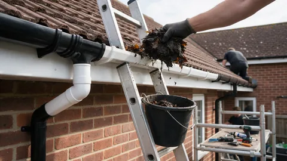
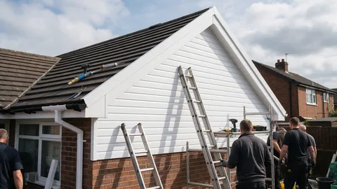
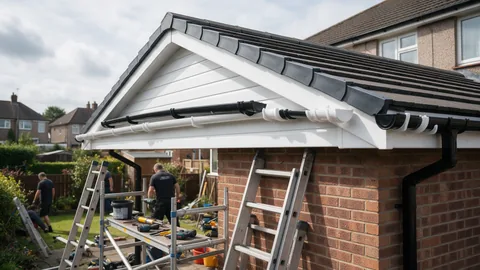

What we do
The bit at the edge of the roof.
Six kinds of job, and they run into each other more than people expect. Somebody rings about a gutter going over, we get up there and the real problem is a fascia board that has gone soft and let two brackets drop. The clean was never going to fix it. Here is each of them on its own.
The six
One at a time.

Generated photoGutter cleaning
Cleared out by hand from the top down, the outlet checked, the downpipe run through and the muck taken away rather than tipped in your border.
 Generated photo
Generated photoGutter repairs and replacement
A dripping joint, a dropped bracket, a run that holds water in the middle. Most of it is a length and a seal rather than the whole set.
 Generated photo
Generated photoFascias and soffits
The board the gutter hangs off and the board underneath it. Old timber comes off, the roof edge gets looked at, and the vents go back in.

Generated photoCladding and bargeboards
The sloping boards up the gable and the panels nobody can paint safely any more. Done while the access is already up, not next year.
 Generated photo
Generated photoDownpipes
Clips into the mortar, a swan neck that actually clears the eaves, and the bottom going into a gully rather than on to the path.

Generated photoRoofline replacement in uPVC
Fascia, soffit, gutter, bargeboard and the gable, all changed together in one go. One set of access, one mess, one finish.
The four parts
What is actually up there.
Four pieces, each with a job to do. Knowing which one has failed is most of knowing what the work is.
What we do not do
Worth saying out loud.
The roof itself
Tiles, slates, ridges, flashing, chimneys and flat roof coverings are a roofer's trade. We will tell you when something up there wants one, and show you a photograph of it, but we will not have a go at it.
Capping over old timber
Screwing a thin uPVC skin over a rotten fascia and calling it new. It looks the same for a year and hides whatever the wood is doing. If that is what somebody has quoted you, ask what happens to the old board.
Ladder work in the wind
If it is blowing or the wall is running wet, we are not going up and neither should you. A gutter overflowing for one more night does less damage than a fall from a ladder.
Not sure which of those you need?
Most people are not, and from the ground it all looks the same. Tell us what you can see and we will work it out at the visit.